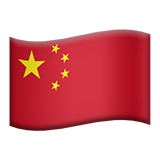
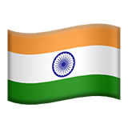
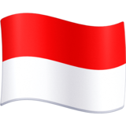

Os 10 Maiores Países do Mundo
Lista em extensão territorial
A extensão territotial é um critério muito utilizado para comparação entre países. Em seguida veremos os maiores países em extensão territotial:
- Rússia (17.098.246 km²) Número populacional (145.934.462 habitantes)
- Canadá (9.984.670 km²) Número populacional (37.742.000 habitantes)
- China (9.596.961 km²) Número populacional (1.434.324.000 habitantes)

- Estados Unidos (9.371.174 km²) Número populacional (331.002.651 habitantes)

- Brasil (8.515.767 km²) Número populacional (212.559.417 habitantes)
Ainda segundo um levantamento do(IBGE) países como:
- Austrália (7.692.024 km²)
- Índia (3.287.590 km²)
- Argentina (2.780.400 km²)
- Cazaquistão (2.724.900 km²)
- Argélia (2.381.741 km²)
também estão nessa contagem, entre os maiores em expansão territorial.
A extensão territorial é a medida total da área de um território. Na atualidade, o maior país do mundo é a Rússia, que possui cerca de 17 milhões de quilômetros.
segundo maior país em extensão territorial do mundo é o Canadá, seguido da China, da Índia e dos Estados Unidos,
sendo que os três possuem, cada um, uma área aproximada de 9 milhões de quilômetros quadrados.
Lista dos países mais populosos
Outro critério bastante utilizado é o da população absoluta. Os países mais populosos do mundo são:
- China (9.984.670 km²) Número populacional (1.434.324.000 habitantes)
- Índia (3.287.590 km²) Número populacional (1.380.004.385 habitantes)

- Estados Unidos (9.371.174 km²) Número populacional (331.002.651 habitantes)
- Indonésia (1. 904.569 km²) Número populacional (273.523.615 habitantes)

- Paquistão (796.095 km²) Número populacional (220.892.340 habitantes)

A população compreende o número total de habitantes de um determinado país,assim, adota-se o conceito de população absoluta.
O crescimento acelerado da população mundial, em especial no último século, resultou em países muito populosos.
Os dois destaques mundiais são a Índia e a China, que possuem mais de 1 bilhão de habitantes cada.
PBIs Mundiais
Quais são as maiores economias mundiais?
Segundo dados do PIB a somatória dos bens e serviços produzidos por ano. Considera-se que o PIB nominal das 10 maiores economias do mundo,
conrrespondem a dois terços de toda economia mundial, sendo que as 20 maiores conrrespondem a mais de 80% de toda produção mundial.
A seguir conheça as 10 maiores economias do mundo em 2022
Segundo o Fundo Monetário Internacional (FMI), o ranking das maiores economias do mundo em 2022 são:
- Estados Unidos (25,35);
- China (19,91);
- Japão (4,91);
- Alemanha (4,26);
- Reino Unido (3,85);
- Índia (3,53);
- França (2,94);
- Canadá (2,22);
- Iália (2,06);
- Coreia do Sul (4,42);
O título da maior economia do mundo é dos Estados Unidos com PIB de 25,35 trilhões de dólares, seguido da China com um PIB de aproximadamente 19,91 trilhões,
na terceira posição de países mais ricos do mundo em 2022 é do Japão com um PIB de 4,91 trilhões de dólares.